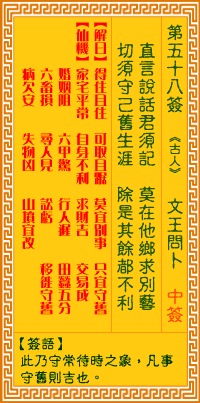

观音灵签第五十八签 【文王问卜】 |
 | |||
忠言善语君须记 莫向他方求别艺 劝君安守旧生涯 除却有余都不是 |
||||
| 【吉凶】 | 中平签 | 【宫位】 | 丑宫 | |
| 【签语】 | 此卦守常待时之象，凡事守旧则吉也。 | |||
| 【解曰】 | 得住且住 可取且踞 莫宜别事 只宜守旧 | |||
| 【仙机】 | 此签家宅平常，自身不利，求财吉，交易成，婚姻阻，六甲惊，行人迟，田蚕五分，六畜损，寻人见，讼亏，移徙守旧，病欠安，失物凶 ，山坟宜改。 | |||
| 【详解】 | 忠言必逆耳的道理你必须牢记，何必舍近求远往别处寻找其它的技艺;劝你守旧温故而知新，除此之外应该是没有更好的方法了吧。 得往且往，可往旧路，温故知新，莫求别路。此签守旧生涯之象，凡事不可妄为。 本签者。要君尔必守旧生涯之象。凡事必须三思而后行。不宜轻举妄动。诗曰。忠言善语君须记。勿因不满现况而见异思迁。一股干劲。结果带来不可收拾之残局。是时悟之。不如不作。实时已晚。噬脐不及者。易言之。得往且往可往旧路温故知新莫求别路。 此签有”虚心求教”之意。告诫当事人，勿恃才傲物。有些人因为本身才气纵横而自视甚高，因此目空一切，对于身边的人事物，也常看不上眼，甚至语多讥讽、一派自以为是，非不得已，决不向他人求教。须知过于刚硬的个性会带给别人不悦的感受而容易导致处处碰壁，如果能够正视并收敛此种狂放自傲的个性，凡事虚心下问，加上本身的才华与能力，相信成就一定不只于此。对于身边亲朋好友的劝告，务必听进心里去，想一想别人为什么这么说。 | |||
| 【典故】 | 周文王建造灵台，以占风侯，看验民灾。当晚他太疲倦了，睡在灵台上，时至三更半夜，梦见一双白额猛虎，肋生二双翅膀，飞入帐中， 文王惊醒，第二天问卜吉凶，卜后来文王在渭水得遇姜太公。封神演义。 | |||